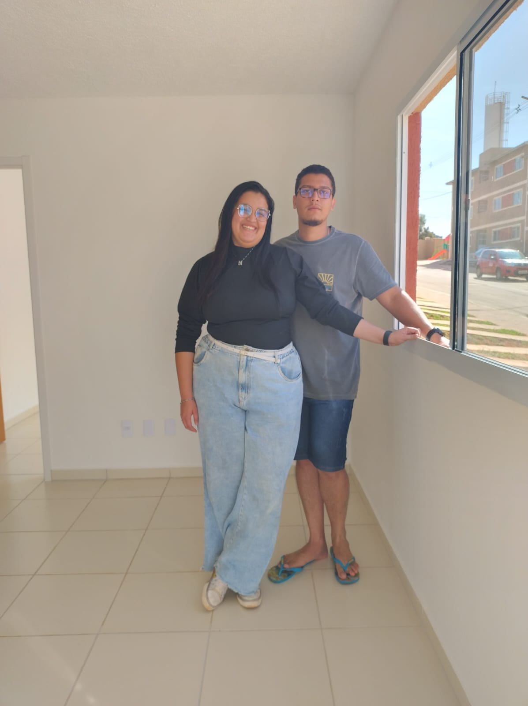
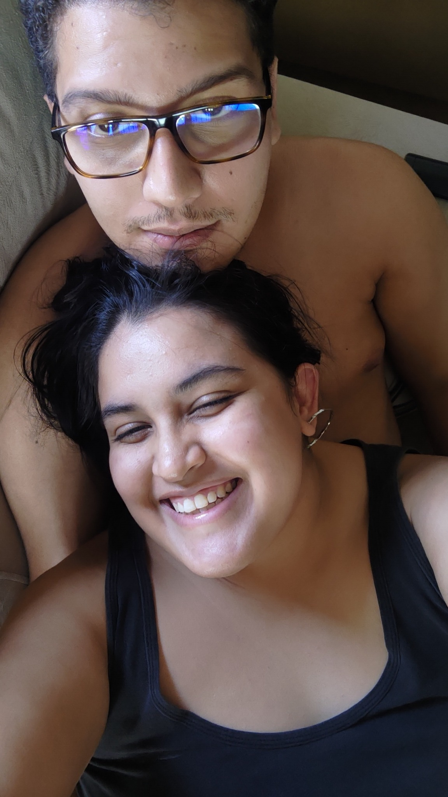
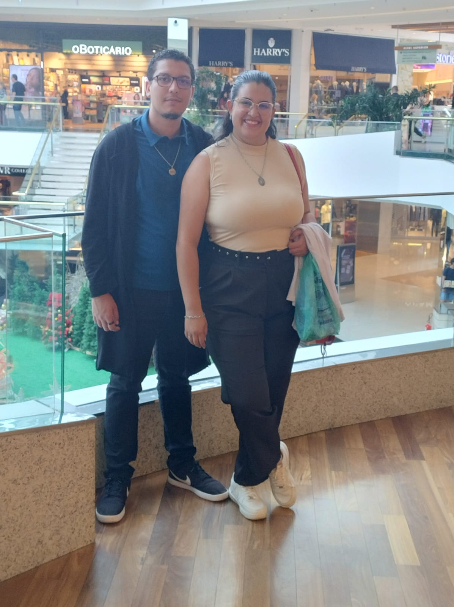
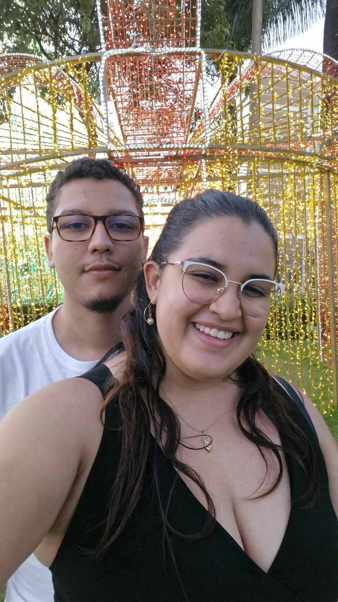
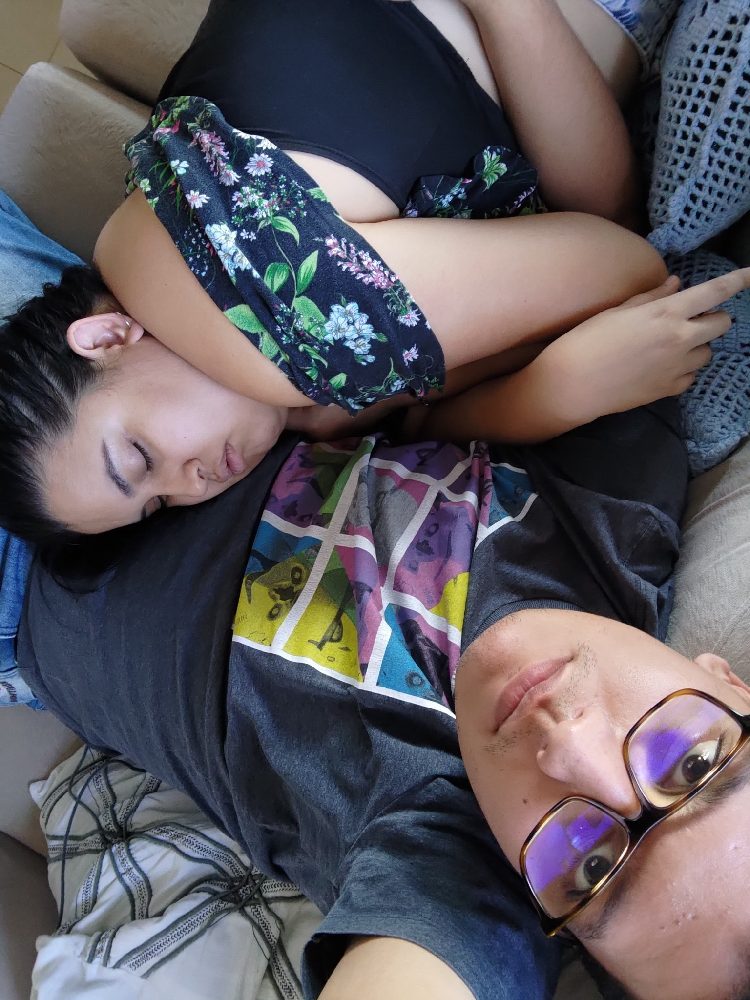
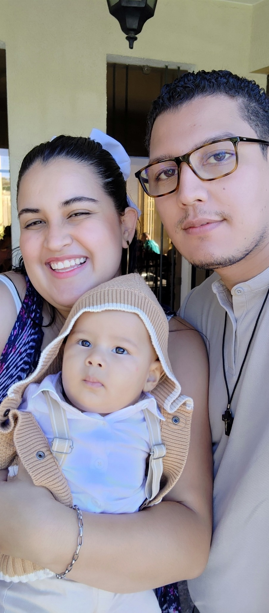

Nayara & Júnior
“Deus é amor, e quem permanece no amor permanece em Deus.” — 1 João 4:16
“Deus é amor, e quem permanece no amor permanece em Deus.” — 1 João 4:16






O amor é paciente, o amor é bondoso. Não inveja, não se vangloria, não se orgulha. — 1 Coríntios 13:4
Façam tudo com amor. — 1 Coríntios 16:14
O essencial não é o que fazemos, mas o amor com que o fazemos. — Santa Teresa de Calcutá
O amor verdadeiro não consiste em receber, mas em dar. — São João Paulo II
Deus é amor, e quem permanece no amor permanece em Deus. — 1 João 4:16
Amar não é olhar um para o outro, é olhar juntos na mesma direção. — Santa Teresa d’Ávila
O amor tudo suporta, tudo crê, tudo espera, tudo desculpa. O amor jamais passará. — 1 Coríntios 13:7-8
Quem não vive para servir, não serve para viver. — Dom Hélder Câmara
O que Deus uniu, o homem não separe. — Marcos 10:9
A família é santuário da vida e do amor. — São João Paulo II